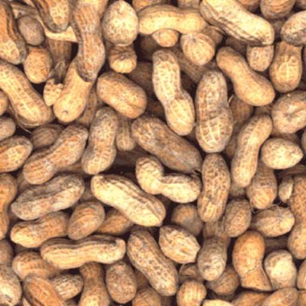

|
На пазара може да откриете богата гама от фъстъчени масла, но нашите технолози създадоха за Вас новите продукти Nutеа R. За приготвянето им се използват най-добрите сортове фъстъци, отгледани в екологично чисти региони. С помощта на модерни технологии бе постигнато качество, което би задоволило и най-претенциозният клиент. Продуктите Nutеа R може да откриете във всички търговски вериги в щата Джорджия. По какво да ги познаете? Уникален дизайн, достъпни цени, невероятен вкус! |
|
|
 |
Nutеа R Standard
–
фъстъчено масло приготвено от прясно
изпечени фъстъци от подбрани сортове. Nutеа R Standard
–правилният
избор! |
| Nutеа R Natural- фъстъчено масло от фъстъци отгледани в екологично чисти райони, към което са добавени свежи кълнове. Nutеа R Natural –елитна закуска! | |
| Nutеа R Generic - масло с традиции, приготвяно по оригинална рецепта и до днес. Започнете деня с Nutеа R Generic ! | |